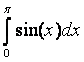

|
|
|
ΘΕΜΑΤΑ
ΕΞΑΣΚΗΣΗ
Δοκιμάστε τα ακόλουθα
προγράμματα
- Χρησιμοποιώντας τη μέθοδο ταχύτητας
του Verlet να
βρεθεί η εξέλιξη της κίνησης ενός
βλήματος το οποίο εκτελεί πλάγια βολή με
αρχική ταχύτητα 500m/sec
και γωνία 200.
Χρησιμοποιήστε βήμα 0.01sec και μέχρι τη
χρονική στιγμή που το βλήμα πέφτει στο
έδαφος. Να
συγκρίνεται το αποτέλεσμά σας με την
θεωρητικά αναμενόμενη τιμή καθώς και με
αυτή που παίρνετε χρησιμοποιώντας τη
μέθοδο του Euler. [Προτεινόμενη
λύση]
- Χρησιμοποιώντας τη μέθοδο Verlet ταχύτητας
να μελετηθεί η κίνηση του αρμονικού
ταλαντωτή. Οι εξισώσεις κίνησης είναι dυ(t)/dt = -ω2x(t) και υ(t) = dx(t)/dt. Να
γίνει η γραφική της θέσης του σώματος
συναρτήσει του χρόνου καθώς και η
γραφική της ενέργειας (δυναμική,
κινητική και ολική ενέργεια) συναρτήσει
του χρόνου. Θεωρήστε 1000 και 10000
βήματα για χρονικό διάστημα 2 περιόδων.
Θεωρήστε σαν αρχικές συνθήκες x(0)=1 και υ(0)
= 0, ενώ k=1 και
m=1. Η
περίοδος δίνεται από την σχέση
Τ=2π/ω. [Προτεινόμενη
λύση]
- Χρησιμοποιώντας τη μέθοδο του
τραπεζίου, ενδιάμεσου σημείου και Simpson
υπολογίστε τα ακόλουθα
ολοκληρώματα: (θα
πρέπει να εισάγετε την συνάρτηση που
έχετε να ολοκληρώσετε στο υποπρόγραμμα function του
κώδικα)

Θα πρέπει να τρέξετε τους υπολογισμούς
σας για 500, 1000 και 5000 βήματα.
Προσπαθήστε να μελετήσετε τις
δυνατότητες σύγκλισης κάθε μεθόδου.
Φτιάξτε ένα δυσδιάστατο πίνακα με 2
στήλες για κάθε μέθοδο και δώστε στην
πρώτη στήλη τα αποτελέσματα που βρίσκετε
ενώ στη δεύτερη στήλη δώστε την απόλυτη
τιμής της διαφοράς του αποτελέσματός σας
με την αναλυτική λύση που βρίσκετε.
Ισχύει ότι αυξάνοντας το Ν αυξάνει η
ακρίβεια προσδιορισμού του
ολοκληρώματος. [Προτεινόμενη
λύση]
- Animation:
Kατεβάστε το
παράδειγμα simple_animation.py
κινούμενης εικόνας από
την διάλεξη. Για να το τρέξετε θα πρέπει
να έχετε κάνει εγκατάσταση το πακέτο
ffmpeg-python. python3 -m pip install
--user ffmpeg-python
Το πρόγραμμα δημιουργεί το file
simple_animation.mp4 το οποίο θα
μπορούσατε να ανοίξετε μετά δίνοντας την
εντολή firefox simple_animation.mp4.
Μπορείτε να παίξετε με τις παραμέτρους
και να δείτε πως αλλάζει η εικόνα που
πέρνετε.
-
Προσπαθήστε να κατασκευάσετε το
animation ενός σώματος το οποίο
περιστρέφεται γύρω από ακλόνητο σημείο.
Για να το κάνετε αυτό θεωρήστε αρχικά
ότι το ακλόνητο σημείο βρίσκεται στο
μέσο της εικόνας σας που έχει άξονες x
και y οι οποίοι εκτείνονται
από -L/2 εως L/2. Θεωρήστε ότι L=2.2.
Μπορείτε να περιγράψετε το σώμα αυτό με
τη μέθοδο plot χρησιμοποιώντας τις
κατάλληλες συντεταγμένες και ένας marker
κάποιου μεγέθους. Το δεύτερο σώμα που
περιστρέφεται μπορείτε να το
απεικονείσετε επίσης σαν έναν marker
μικρότερου μεγέθους. Η θέση του marker
αυτού (ουσιαστικά τα σημεία του
γραφήματος της συνάρτησης που θα κάνουμε
plot αλλά με marker και όχι γραμμή)
έχουν συντεταγμένες που μπορούν να
περιγραφούν από πολικές συντεταγμένες x=cos(i)
και y=sin(i) και
η ακτίνα είναι 1 ενώ i είναι η
παράμετρος του frame της animation και
μπορεί να πέρνει τιμές στο διάστημα
[0,2π] ανάλογα με τoν αριθμό των frames
που θεωρείτε. Έστω ότι έχετε 90 frames
και επομένως το i θα πέρνει
τιμές (0,2π,90). [Προτεινόμενη
λύση]
- Κάντε το animation μιας σπείρας η
οποία αυξάνει με τον χρόνο. Η ιδέα των
συντεταγμένων του γραφήματος είναι ίδια
με το προηγούμενο πρόβλημα αλλά αυτή τη
φορά θα πρέπει η ακτίνα να αυξάνει με
τον αριθμό του frame. [Προτεινόμενη
λύση]
- Θα μελετήσετε την κίνηση του εκκρεμούς
το οποίο υπόκειται σε μια εξωτερική
αντίσταση και επομένως η ταλάντωση είναι
φθίνουσα έως ότου σταματήσει. Όπως
είχαμε δει στο προηγούμενο εργαστήριο,
οι εξισώσεις κίνησης είναι dω/dt
=a(θ) και dθ/dt=ω όπου η γωνιακή
επιτάχυνση a(θ)= - (g/L)sinθ. Για μικρές
γωνίες sinθ~θ και επομένως α(θ)
~ -(g/L)θ. Tώρα υπάρχει αντίσταση του
αέρα η οποία είναι ανάλογη της ταχύτητας
της μάζας του εκκρεμούς f = -bω. Σε
αναλογία με την περίπτωση του απλού
εκκρεμούς χωρίς αντίσταση, οι μεταβολές
της γωνιακής ταχύτητας και γωνιακής
θέσης συναρτήσει του χρονικού
διαστήματος είναι:
Δω/Δt=(-g/l sinθ) +
b/(lm) ω και Δθ = ωΔt.
Να κάνετε το γράφημα της θέσης
συναρτήσει του χρόνου για 20s και για
10000 βήματα. Θεωρήστε ότι η μάζα του
σώματος είναι 1 και το μήκος του
εκκρεμούς 1. Η αρχική γωνιακή ταχύτητα
είναι ω0 = 10r/s και η αρχική
γωνία εκτροπής 3rad ενώ ο συντελεστής
αντίστασης b = 0.5km.
Χρησιμοποιείστε την μέθοδο του Euler.
Θα πρέπει να κάνετε το animation της
κίνησης του εκκρεμούς αυτού. [Προτεινόμενη
λύση]
Εργασία για το σπίτι
Tο έβδομο homework
θα πρέπει να επιστραφεί μέχρι την Δευτέρα
05/04/21 πριν το εργαστήριο. Θα πρέπει να
στείλετε τα προγράμματά σας σε ένα αρχείο
και μόνο. Για να το κάνετε αυτό θα δώσετε
στο terminal την εντολή:
tar -czvf username_hm07.tgz *.py
όπου username είναι το username του e-mail
του πανεπιστημίου. Το file αυτό θα το
κάνετε attached σε ένα e-mail που θα
στείλετε στο fotis@ucy.ac.cy
με θέμα (subject) username_phy145_hm07.
|
| |
|
|
|
|